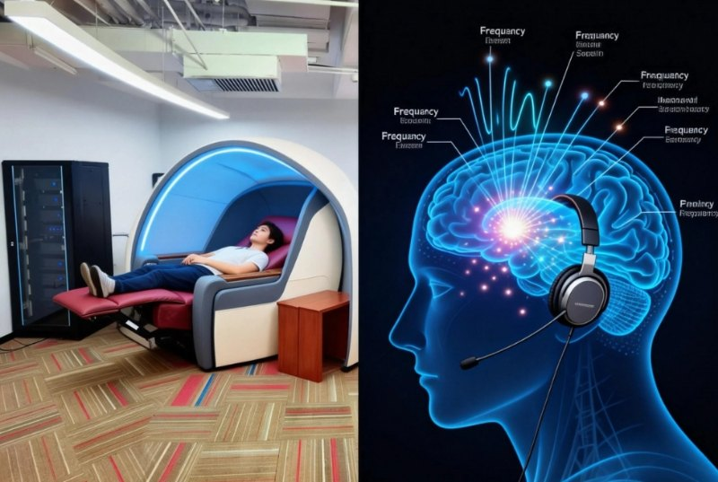
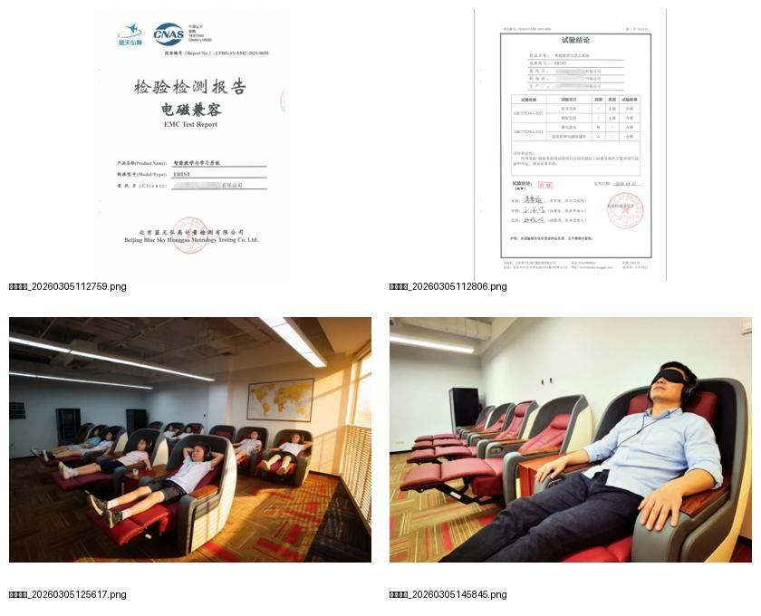
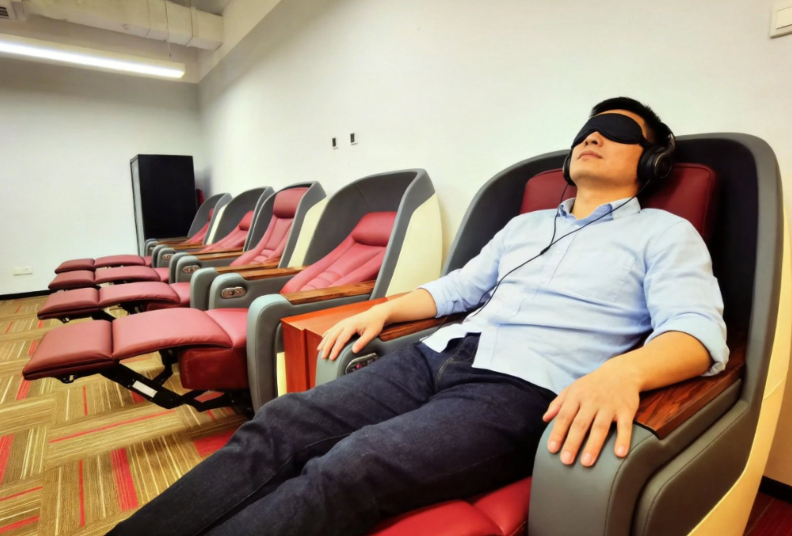

AI脑波英语把单词“存入”大脑
@类脑机 / 非侵入式
通过特定频率声波，激活大脑长久记忆区
躺着背单词，每天几百至1000+，年遗忘率低至5%

学习舱、耳机、AI 训练系统与教练督学协同配合，形成更适合词汇吸收与巩固的训练路径。
覆盖小升初、中考、高考、四级、六级、托福雅思及大学生、成人词汇提升需求。
让背单词从重复硬扛，变成高效吸收
学习舱环境、特定频率声波、词汇训练系统和教练督学共同作用，让记忆效率、学习体验与复习节奏同步提升。
存储式记忆
不只是短时记住，而是让词汇进入更稳的长期记忆路径，降低“背了忘、忘了背”的循环。
躺着背单词
在放松、舒适、低干扰的环境中训练，减轻传统背单词带来的疲劳感与抗拒感。
结果可视化
音标测试、词汇量测试、阶段复测和学习档案同步推进，进度清晰可跟踪。
安全认证
设备通过第三方 EMC 检测，核心安全信息与报告结果公开展示，使用过程更安心。

鄂尔多斯康巴什未来学校
初三 225 名学生，2 个月训练，英语平均分从 48.25 提升至 72.9，平均提升 24.65 分。
θ波、θ-γ耦合与长期记忆形成
根据核心原理资料，θ波（4-8 Hz）被视作长期记忆形成的重要时间窗口。学习过程不只是“听单词”，而是通过特定频率声波、学习舱环境和 AI 训练系统协同作用，帮助大脑进入更适合编码、整合与提取的状态。




从小升初到托福雅思，覆盖不同阶段词汇提升
统一 6 个月服务周期，包含脑科学硬件使用权、AI 训练系统、教练督学与 3 年内免费复训。
小升初词汇营
轻松应对小升初，帮助孩子更早建立英语优势。
中考词汇营
补足中考词汇底盘，让阅读、完形和作文更轻松。
高考词汇营
面向高考核心词汇训练，强化阅读理解与作文表达。
真实学员分享让学习感受、变化与信任感都更具体，也更适合放在家长决策前的关键位置。
效果、安全、时间安排，一页看清
设备安全吗？会不会有辐射？
采用的是特定频率声波，不是电磁辐射；设备已完成第三方 EMC 检测，核心项目结论合格。
孩子平时作业多，没时间怎么办？
可按周中 2 小时、周末集中输入、寒暑假集训的方式安排，不影响校内学习节奏。
课程结束后忘了怎么办？
统一 6 个月服务周期，支持 3 年内免费复训，让词汇掌握更稳。
除了小初高，还适合哪些人？
也覆盖大学生、成人、四级、六级及托福雅思等群体。